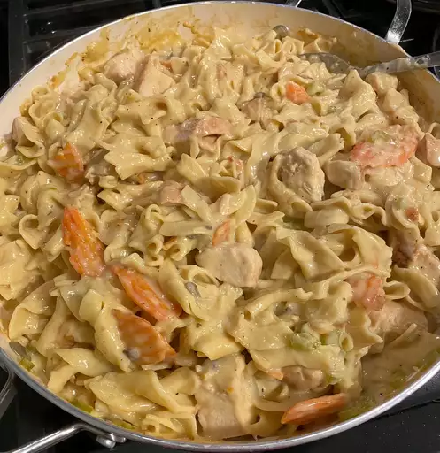

Chicken and Noodles

An Easy Chicken and Noodles Recipe
Description
Very easy chicken and noodles recipe. Requires few ingredients and is delicious.
Takes 30mins to make and serves 6.
Ingredients:
These are the ingredients you need:
- 3 (14.5 ounce) cans chicken broth
- 1 (26 ounce) can condensed cream of chicken soup
- 1 (10.75 ounce) can condensed cream of mushroom soup
- 2 cups diced, cooked chicken breast meat
- 2 teaspoons onion powder
- 1 teaspoon seasoning salt
- ½ teaspoon garlic powder
- 2 (9 ounce) packages frozen egg noodles
Steps:
- Gather the ingredients.
- Combine chicken broth, both condensed soups, and diced chicken in a large pot.
Season with onion powder, seasoning salt, and garlic powder.
- Bring to a boil over high heat and stir in noodles.
- Reduce heat to low and simmer until desired consistency is reached, 20 to 30 minutes.
- Serve hot and enjoy!